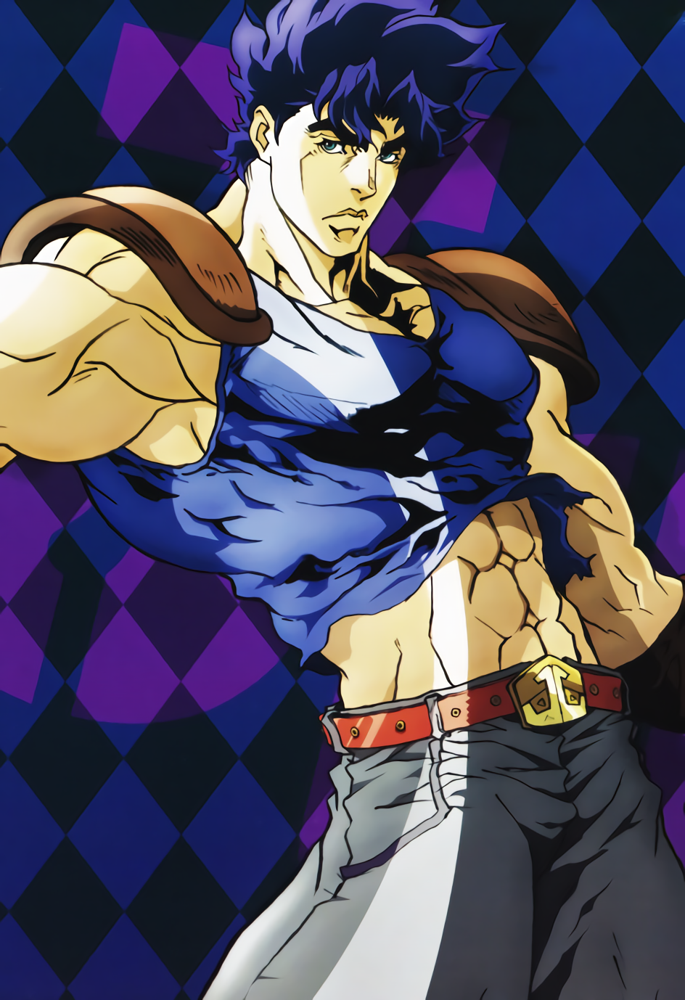
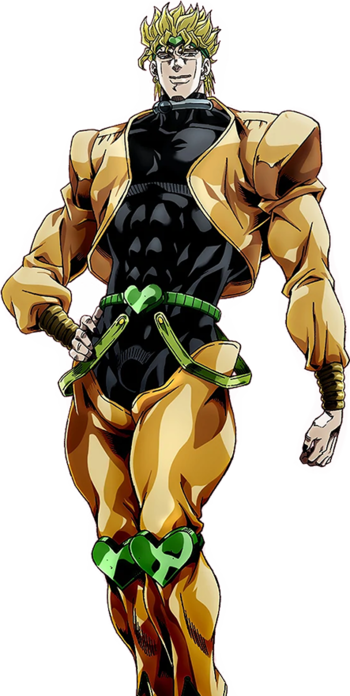

The Characters of JoJo's Bizarre Adventure
It's not every day you come across a series that makes you love its villains as well. Enter JoJo. One of the first villains you're introduced to is a maniacal, self-obsessed jerk that you learn to hate. However, he's so bad you learn to love when he's on screen because of how over the top he is!
Mind you, it's not just one character that's written this way! All the main characters in the series are well written and often get into hilarious antics and predicatments that make you love every one of them. These characters are given depth and backstories that make you care for them, even after some meet an untimely demise.
Please, note. This is not an archive of all JoJo characters! I'm merely putting a few of the first ones to make screen time. However, there are some fantastic ones in the series, and they all deserve a page to themselves!
Jonathan Joestar
The first character in the series that we are introduced to. He is the son of a wealthy Englishman who loses his mother early on. Jonathan is a gentleman through and through. He cares about his friends and will defend them with his life. Honor is something he holds in utmost regard.
Dio Brando
Dio Brando is the first villain of the series. At first he just wants to take what belongs to Jonathan and make it his because he feels that he is more worthy. He secretly desires to kill George Joestar (Jonathan's father) who took him in to care for him after his own father's death so that he will be the propieter to the family fortune. However, when Jonathan makes his villainy known, Dio turns to the power of the stone mask and turns into an unstoppable force...a vampire!